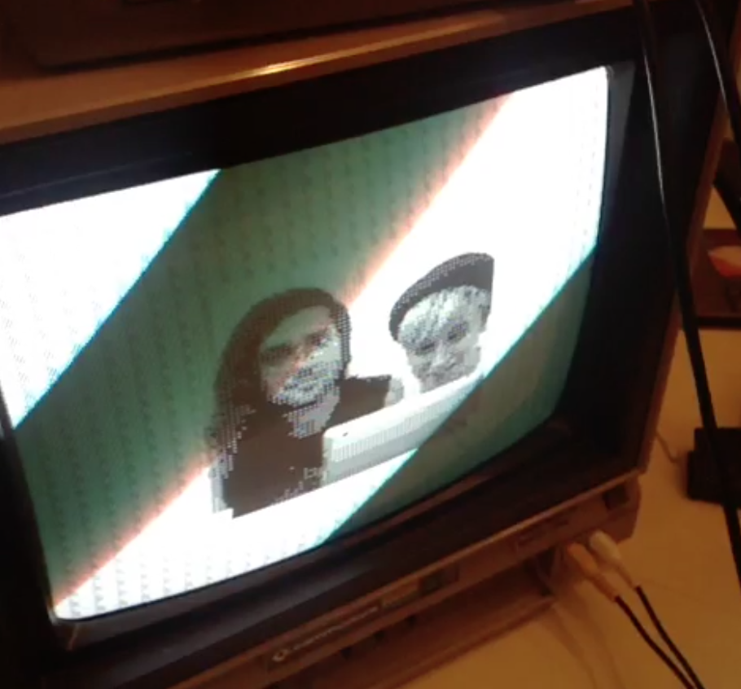

Custom NES ROM
Source code and ROM on GitHub
6502 assembly language
"This very simple, glitchable audiovisual NES ROM celebrates love. Made on June 26 in response to the US Supreme Court ruling for marriage equality."
Animal Crossing (Sweet-N-Fun Hack) (2015)
Nintendo Gamecube ISO hack
Demo video on YouTube
6502 assembly language, hex-editor hacking
"The Nintendo Gamecube game Animal Crossing (2002) allows players to collect and play classic NES titles such as Donkey Kong and Balloon Fight. This proof-of-concept hack replaces one of the included NES games with Electronic Sweet-N-Fun Fortune Teller."
Electronic Sweet-N-Fun Fortune Teller (2014)
Custom NES ROM
$1.99 on itch.io
6502 assembly language Electronic Sweet-N-Fun Fortune Teller is an love-compatibility and horoscope game for play on the NES. The game is inspired by teenage girls' magazines and Japanese electronic fortune games of the 1980s and 1990s such as the line of Herpit toys by Bandai. Electronic Sweet-N-Fun Fortune Teller calls into question feminine/masculine and normative/queer binaries within gamespaces, especially those occupied by nostalgic, 8-bit culture. Exhibited at the Visual Arts Center (Austin), Queer Arcade (Toronto), Salon Ludique (Montreal), Public Beta (London).
Famikura (2013)

Custom NES ROM and hardware
Unreleased
6502 assembly language, Arduino
An NES hardware and software proof-of-concept that transfers images taken with a laptop webcam to an NES via the console's controller port. In collaboration with Andrew Reitano.
TRACK+FEEL II (2012)
Custom NES ROM
Pay-what-you want (personal use only) on itch.io
6502 assembly language TRACK+FEEL II is a cooperative, interactive, glitch-art and music creation tool for the NES. Cycle through several beats and grooves, and new animations will appear on screen. As you dance on the NES Power Pad mat controller, you'll create strange melodies! Certain key combinations will glitch it all out. TRACK+FEEL II aims to present glitches and generative chaos as tools of construction rather than destruction. Exhibited at Reset: Post-consumer Gamer Culture, Juegos Rancheros, IndieCade Night Games, TEDxAustin, and more. An IndieCade 2012 Official Selection.
Hello Kitty Land (2003)
NES ROM hack
Unreleased
Hex-editor hacking
An unfinished mod of Super Mario Bros. for the NES that features Hello Kitty and other Sanrio characters. Originally created in 2003 and thought to be lost until recovered from an abandoned hard drive in 2014. Exhibited at Salon Ludique.